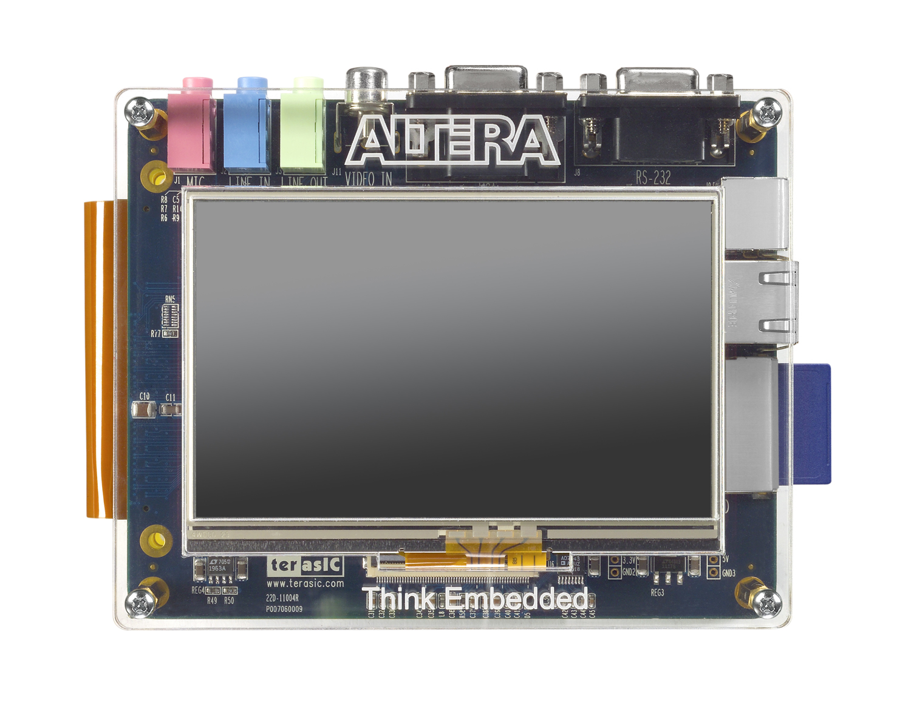

| The Board Update Portal is being served by a design running on the board and enables the writing of new FPGA images to the Flash. This design, called Application Selector consists of a Nios II CPU, Triple Speed Ethernet MAC and DDR2 Memory Controller. Download the entire design from the homepage link below. |
| Kit Page | Download the latest designs, IP cores, documentation and support information |
| Update | Update the board with a new FPGA Image by programming it into flash memory |
The contents of this website are contained on a FAT16 formatted SD card in a directory at the top level called "webserver_html". You can replace this content or add new content by placing your SD card into an SD card reader and your content into this directory.
Note: Content you add must be of a known "type" to be served properly. HTML, GIF, and JPEG images are a few examples of types supported by this example application. For more advanced file types you'll need to modify the web-server example application.